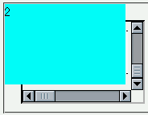
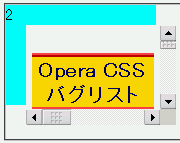

インラインフレームであるiframe要素にz-indexプロパティを指定しても無視され、常に最前面に表示されてしまう。
<div style="position:absolute; left:0; top:0; width:150px; height:100px; background:aqua; z-index:2;">2</div> <iframe src="b065.html" style="position:absolute; left:20px; top:20px; width:150px; height:100px; z-index:1;">iframe</iframe>
空色の背景のdiv要素のz-indexが2、iframe要素のz-indexが1なので、インラインフレームはdiv要素の後ろ側に置かれるはずです。
N7.1での表示（標準モード）
Opera7.11での表示（標準モード）
Opera6.06、Opera7.03、Opera7.11で不具合の発生を確認しました。